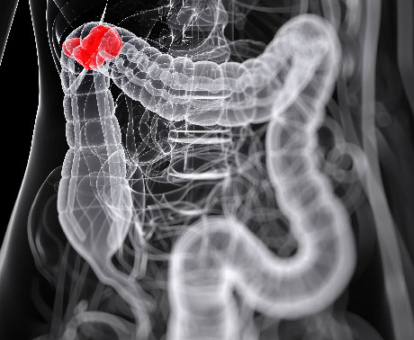
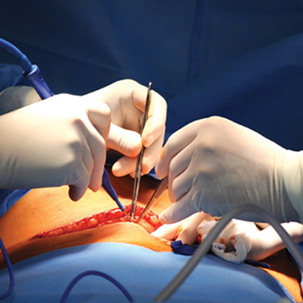
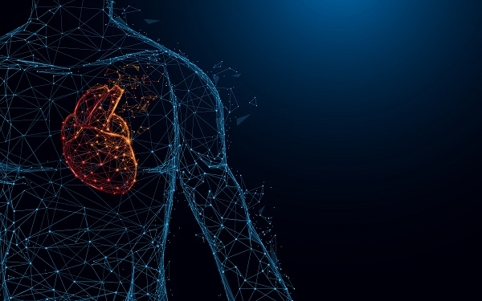

The concept of Asian Institute of Gastroenterology was born around 25 years ago from a polyclinic...

E.C.L Government hospitals in West Bengal, India, provide affordable and accessible healthcare to millions of people.
These hospitals are equipped with modern medical facilities and staffed by skilled professionals dedicated to patient care. Many government hospitals in West Bengal have specialized departments for cardiology, neurology, oncology, and pediatrics, ensuring comprehensive treatment for various ailments.
They also offer extensive outpatient services, enabling efficient diagnosis and treatment without long waiting periods. Government hospitals conduct numerous health camps and awareness programs, promoting preventive healthcare and early detection of diseases.
They play a crucial role in managing public health emergencies, such as the COVID-19 pandemic, by providing testing, treatment, and vaccination services. In rural areas, these hospitals serve as the primary healthcare providers, significantly reducing mortality and morbidity rates.
Excellence and Innovation to ensure best-in-class healthcare at affordable price.
At E.C.L Hospitals, our mission is to provide world-class healthcare to Indian and International patients whilst ensuring ‘inclusivity for all’ by:
E.C.L Hospital (Sanctoria)
Address: Sanctoria Hospital-Jhalbagan, Sanctoria, West Bengal 713333
Emergency Number: +91-40-42444244, Email: Sanctoriahospital@gmail.com
Phone: +91-40-4244 4222 / 6744 4222, Fax: 91-40-2332 4255
International Services and Business Enquiries
Mr. Santosh Kumar Sahoo, Vice President, Business Development & International Relations
Email: international.patient@ECLhospitals.com
Mr. Niladri B. Samal, Dy. General Manager International Relations
Mob: +91 9000264442, Email: niladrib.samal@ECLhospitals.com
PSU / Govt. Enquiries
Mr. K.Naga Shiva Raj, Sr. Manager -Corporate Relations & Recovery
Mob: +91 9849999857, Email: shiva.koppula@ECLhospitals.com
Corporate Relations - Insurance / TPA
Mr. Amit Chaudhury, General Manager
Mob: +91 9000260399, Email: amit.c@ECLhospitals.com